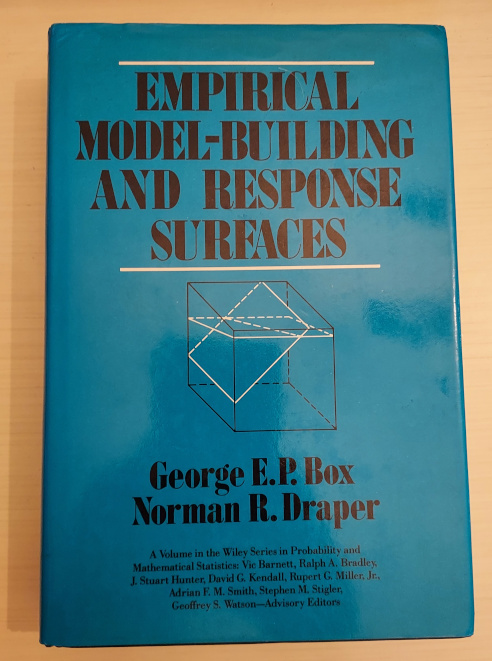
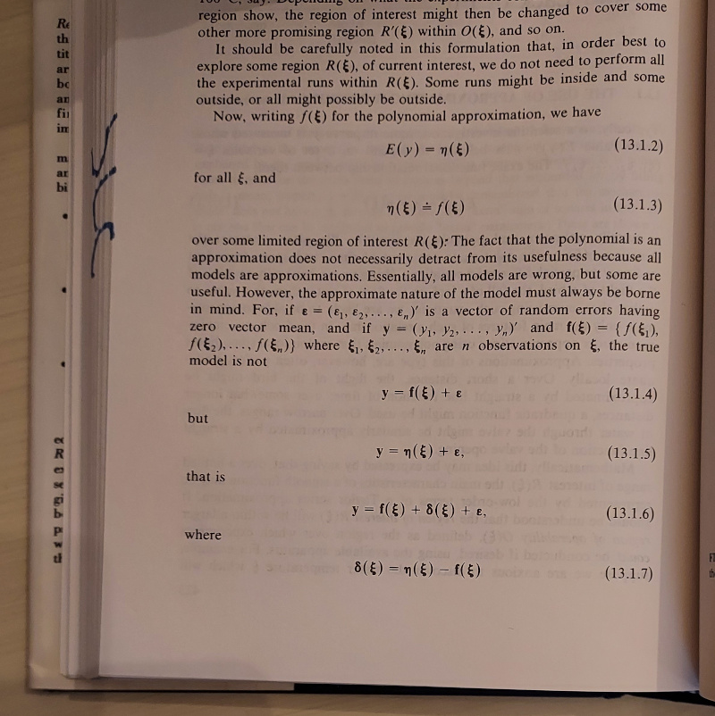
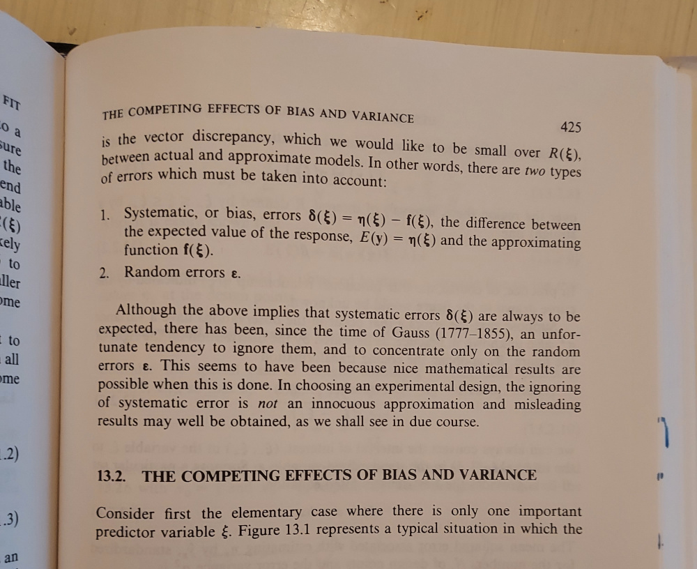

The title of this blog, "All Models are Wrong" may sound negative to non-engineers. It is not meant to be. It is a reminder.
The title comes from George Box, who is often quoted as saying "all models are wrong, but some are useful.". I know this quote from his book with Normal Draper, "Empirical Model-Building and Response Surfaces".

On page 424 of that text, we see the famous quote with additional context.

